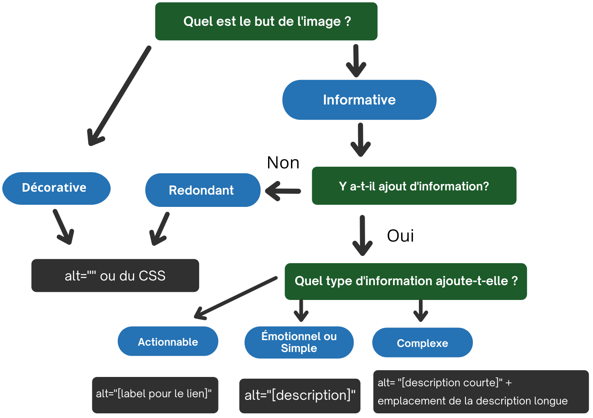

Cet arbre décisionnel décrit comment utiliser l’attribut alt de l’élément <img> dans différentes situations. L’arbre décisionnel ne couvre pas tous les cas. Par exemple, il ne couvre pas l’élément MathML, les groupes d’images, les cartes d’images et les autres approches de texte de remplacement pour les images fonctionnelles et complexes (p. ex., aria-label, aria-labelledby, figcaption, etc.). Pour obtenir des renseignements détaillés sur la fourniture d’équivalents textuels, reportez-vous aux sections précédentes.

alt="" ou du CSSalt="" ou du CSSalt="[label pour le lien]"alt="[description]"alt="[description courte]" + emplacement de la description longue